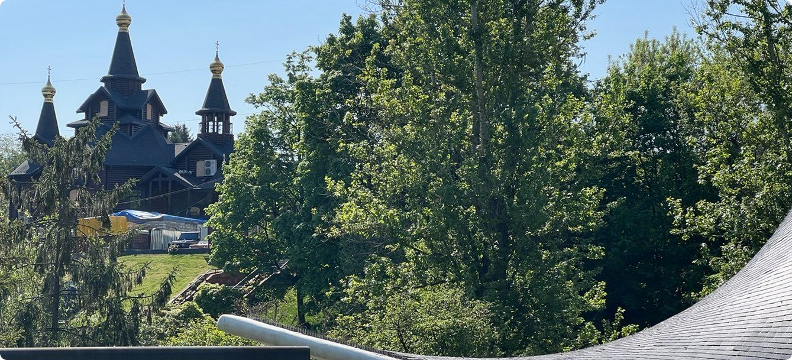
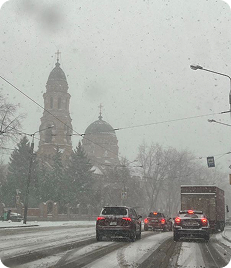
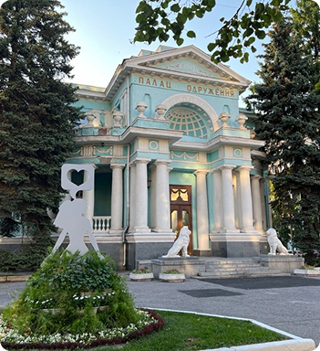
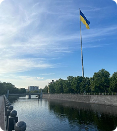

You already know what Kharkiv looks like and why the city was built this way. But photos, buildings and numbers cannot show what everyday life there actually feels like. On this page, I want to show the Kharkiv I know from living there — what people eat, where they walk and spend time, how they move around the city and what student life feels like.

Sarzhyn Yar Park
01

Food is one of the things I miss most about Kharkiv. Kulynychi is everywhere in the city, and I especially remember their pastries and croissants. I have tried croissants in different countries, even in France, but I still have not found the same taste I remember from Kharkiv. Bufet is another place I remember very well because of its pizza.
Even after eating pizza many times in Italy, Bufet is still the one I compare other pizza to. They also serve okroshka, a cold summer soup, which I always associate with hot days in Kharkiv. A lot of people who moved away from Kharkiv miss places like Kulynychi and Bufet because they were a normal part of everyday life in the city.
02

When people in Kharkiv just want to go out, the city centre is usually one of the easiest choices. Sumska Street and Shevchenko Park are popular places to walk, meet friends, sit outside or stop somewhere for coffee. Kharkiv also has many green areas, such as the Botanical Garden, Central Park and Sarzhyn Yar, so people have a lot of places where they can relax or spend time outside.
Because Kharkiv is so large, walking is not enough for everyday life, so the metro and buses are a normal way to move around the city. The metro feels quite old and deep compared with many systems I have seen in Europe, but for people in Kharkiv it is simply part of everyday life.
03

When I studied at NURE, we had classes every weekday, and they usually started at 8 in the morning. Students who already had a car often drove to university, and there was usually free parking around the university. Of course, many others still used the metro or buses.
In the Netherlands, I notice almost the opposite: universities have huge bicycle parking areas, and many students come by bike instead. This was one of the first differences I noticed when I started studying at Inholland.